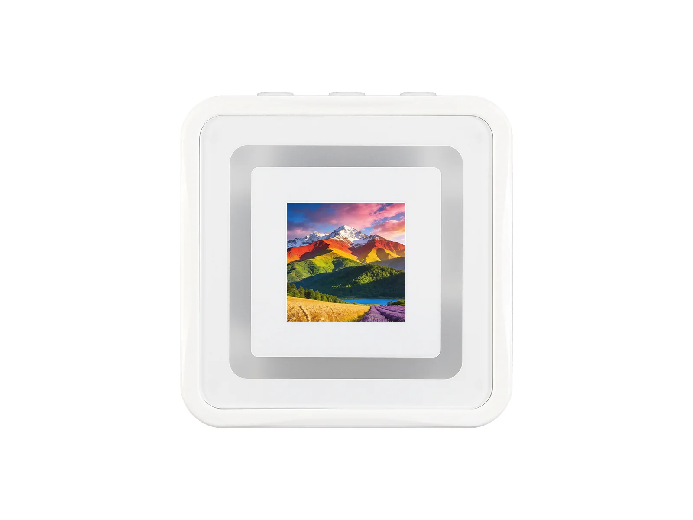

ESP32-S3-LCD-0.85
Waveshare · ESP32-S3 0.85inch LCD Display Development Board, 128 × 128 resolution, Onboard Dual Microphones Array and surround RGB LEDs, Supports 2.4GHz Wi-Fi and BLE 5 | E
ESP32-S3-LCD-0.85 is a 0.85" 128x128 IPS ESP32 display board by Waveshare based on the ESP32-S3 with 8MB flash, 8MB PSRAM.
Features, ports & interfaces
- 8 MB PSRAM
- 8 MB flash
- microSD (TF) card slot
- Wi-Fi 4 (802.11 b/g/n, 2.4 GHz) – version from the ESP32-S3 datasheet
- Bluetooth 5 (LE) – version from the ESP32-S3 datasheet
- Speaker header
- Microphones
- Battery: MX1.25 2PIN connector, for 3.7 Lithium Batt, supports charging and discharging
Specifications
| Parameter | Value | Source |
|---|---|---|
| Screen size | 0.85" | source |
| Resolution | 128x128 | source |
| Panel | IPS | source |
| Display interface | 4-wire SPI | source |
| Display driver | GC9107 | source |
| MCU / SoC | ESP32-S3-PICO-1-N8R8 | source |
| MCU family | ESP32-S3 | source |
| Flash | 8MB | source |
| PSRAM | 8MB | source |
| Wi-Fi | 2.4GHz Wi-Fi (802.11 b/g/n) | source |
| Bluetooth | Bluetooth 5 (LE) | source |
| Category | Waveshare ESP32 touch LCD | |
| Battery | MX1.25 2PIN connector, for 3.7 Lithium Batt, supports charging and discharging | source |
| Display | 15.21 × 15.21 (mm) | source |
| Microphone | Microphones | source |
| Power consumption | 3.3V/5V | source |
| SD / TF | TF card slot | source |
| Speaker interface | Speaker header | source |
| Vendor | Waveshare |
Official links & documentation
Notes
- Auto-added by the monthly scraper on 2026-11-24 from the official product page; values are copied verbatim from that page, fields it does not state are empty. Not yet hand-reviewed.